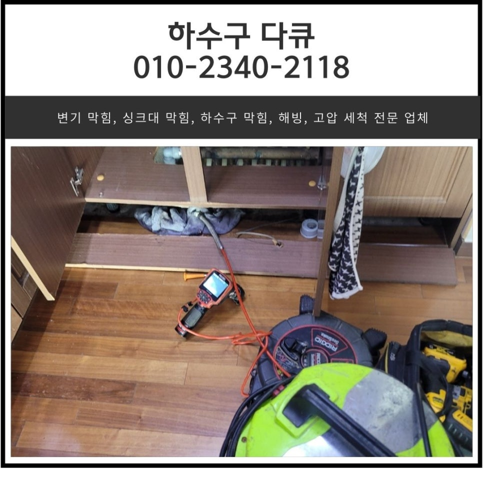
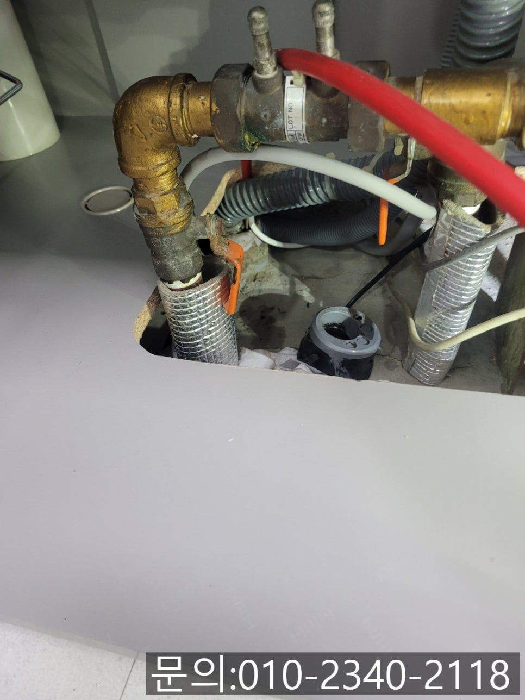
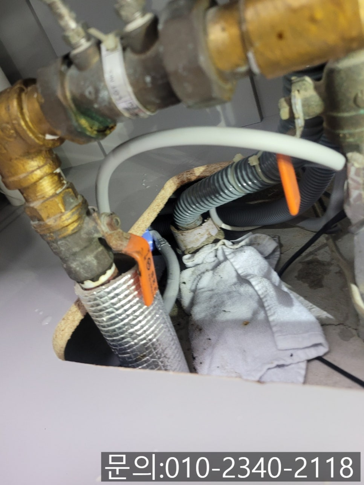
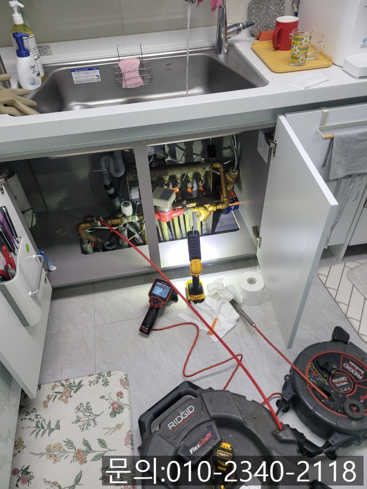
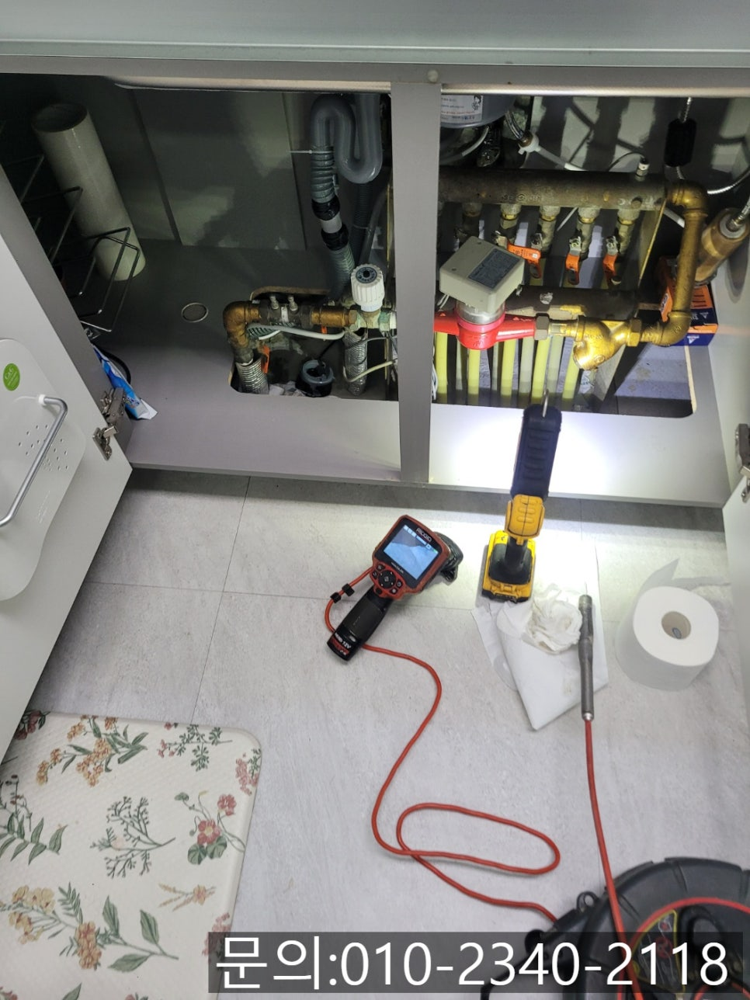
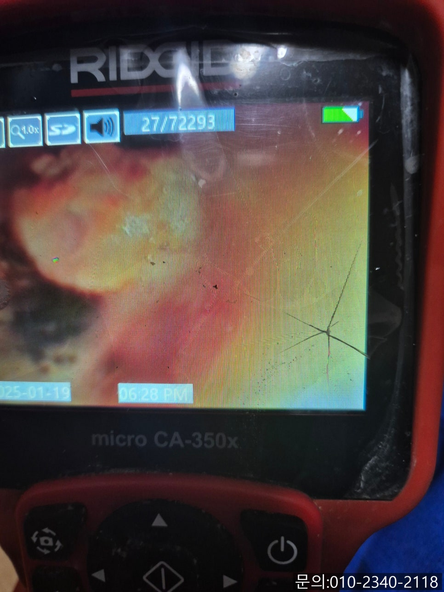
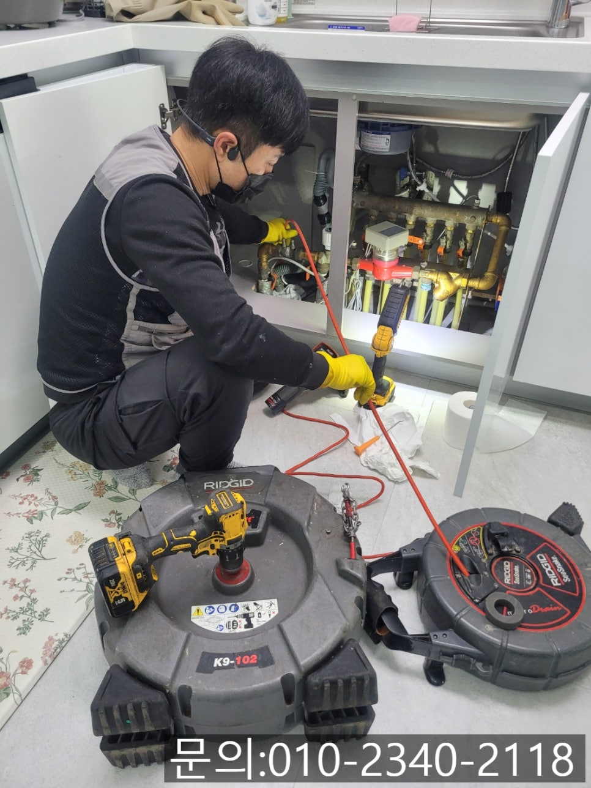

🏠 오산동 하수구 막힘 오산시 누읍동 싱크대 물 넘침 역류 전문 업체
오산 싱크대막힘 전문 시공 후기

📋 작업 개요
- 위치: 오산
- 서비스 유형: 싱크대막힘, 변기막힘, 하수구막힘, 배관막힘, 역류해결, 뚫는업체, 배관청소
- 작업 일시: 2025. 2. 13. 21:38
- 업체명: 하수구수사대 (010-5615-2118)
🔍 문제 상황
안녕하세요.
오산동 하수구 막힘, 오산시 누읍동 싱크대 물 넘침, 역류 전문 업체 하수구 다큐입니다.
온 가족이 매일 사용하는 변기, 싱크대, 세면대 등 하수구 배관이 갑자기 막히게 되면 집에서 물을 편리하게 사용하던 일상이 많이 불편해집니다.
아무래도 물을 사용하지 않고는 생활이 어렵다 보니 오산동 하수구 막힘이 발생하게 되면 신속하게 문제를 해결해야 마음이 편하실 거예요.
혹시 주방 싱크대 막힘으로 불편하셨던 적 있나요?
식사를 마치고 나온 그릇이나 컵을 닦아야 하는데 사용한 물이 빨리 내려가지 않거나 반대로 역류하면서 불편했던 경험이 한 번쯤은 있으실 겁니다.
갑자기 오산동 하수구 막힘이 발생하면 비용이 걱정되다 보니 직접 싱크대를 뚫기 위해 필요한 도구를 구입하거나 락스, 배수구 클리너 등을 부어보기도 하지만 해결되지는 않고 상황이 더 나빠져 본적도 있으실 거예요.

🔎 원인 분석
💡 전문가 진단: 정밀 진단 장비를 사용하여 슬러지의 고착 여부를 판명하고 타격/세척 작업을 실시했습니다.
싱크대 배관이 막혀서 물이 안 내려가는 거니까 막힌 부분만 뚫으면 되겠지? 하고 쉽게 접근하시겠지만 아무래도 사람의 눈으로 직접 배관의 내부를 확인할 수 없다 보니 자칫 잘못했다가는 배관 손상으로도 이어질 수 있어 조심하셔야 합니다.
오산시 누읍동 싱크대 물 넘침, 역류 전문 업체 하수구 다큐가 오늘 소개해 드릴 현장은 일주일 전부터 싱크대에서 물이 빠지는 속도가 느려져 불편함을 느끼셨다고 해요.
주로 집에서 식사를 하시는 만큼 싱크대를 자주 사용하시다 보니 매번 불편해서 네이버에서 꼼꼼하게 설비업체를 서치하시고 하수구 다큐로 연락을 주셨다고 하셨습니다.
1년 전 즈음에도 싱크대에서 물이 느리게 흘러 나간 적은 있었지만 며칠 지나면 괜찮아지다 보니 이번에도 기다려봤지만 점점 상태가 나빠지는 것 같아 배수구 클리너와 락스도 부어봤지만 스트레스만 쌓일 뿐 효과가 없었다고 하셨어요.
고객님께 주소를 받아 현장에 방문해 보니 배관에서 누읍동 싱크대 물 넘침, 역류로 인해 걸레로 막아놓으신 상태셨어요.
걸레를 받쳐놓으셨지만 하수구에서 역류가 지속되다 보니 주방에 악취도 심각한 상태였습니다.
오산시 누읍동 싱크대 물 넘침, 역류 전문 업체 하수구 다큐는 근본적인 원인을 파악하기 위해 내시경 카메라를 배관 내부로 진입시켜 확인해 보기로 했어요.

🔧 작업 과정
앞서 말씀드린 것처럼 배관 내부는 건물에 매립되어 있어 사람의 눈으로 직접 확인할 수 없다 보니 내시경 카메라를 진입시켜 배관 내부를 촬영하여 원인을 파악해야 합니다.
간혹 고가의 장비가 없어 원인 파악도 하지 않고 작업하시는 업체들의 경우 배관 손상을 입힐 수도 있어 조심하셔야 해요!
내시경 카메라가 배관 내부에 진입해 촬영한 모습입니다.
기름 슬러지가 배관을 막고 있어 물이 지나갈 틈이 보이지 않을 정도였어요.
고객님께 오산시 누읍동 싱크대 물 넘침, 역류의 원인을 직접 보여드리면서 설명해 드린 다음 기름 슬러지를 제거하기로 했습니다.
플렉스 샤프트 장비는 싱크대 배관 내부에 쌓인 이물질을 제거하기에 탁월한 장비에요.
노즐 끝에 달린 체인이 전동드릴의 빠르게 회전하는 힘을 전달받아 배관 내부에서 360도로 회전하면서 이물질을 타격해 잘게 부서 주게 됩니다.
잘게 갈린 기름 슬러지는 석션을 이용해 배관에서 완벽하게 제거해 주는 방식으로 작업을 진행하고 있어요.
수차례 반복해서 작업하자 많은 양의 이물질이 제거되었지만 내시경으로 확인해 보니 잔여 이물질이 남아있어 몇 차례 더 플렉스 샤프트로 청소를 진행해 줬습니다.
배관 내부에 둥둥 떠다니는 이물질도 모두 사라지고 새것처럼 깨끗해진 배관 내부가 보이시죠?
작업을 지켜보시던 고객님도 배관에 이렇게 많은 기름 슬러지가 쌓일 줄 모르셨다고 깨끗하게 청소했으니 편하게 주방을 사용할 수 있을 것 같다며 좋아해 주셨습니다.
싱크대는 어쩔 수 없이 사용해야 하는 공간이다 보니 배관을 오래 사용하면 막힐 수밖에 없습니다.


✅ 작업 완료
지금 싱크대 막힘으로 고민하고 계신다면 연락 주세요.
정확한 원인 파악부터 문제 해결까지! 시원하게 뚫어드리겠습니다.
경기도 화성시 동탄대로 677-10 7층 715-A10호




⚠️ 주방 싱크대 배관 막힘 예방 수칙
- ✅ 기름기가 묻은 식기나 프라이팬은 설거지 전 키친타올로 반드시 기름때를 닦아내세요.
- ✅ 주기적으로 싱크대 개수대에 뜨거운 물을 가득 받아 한 번에 내려 배관 내부 기름을 씻어내세요.
- ✅ 배수구 거름망을 미세한 필터로 사용하시고 음식물 찌꺼기가 틈으로 새어 들지 않게 관리하세요.
- ✅ 베이킹소다와 식초를 뜨거운 물과 함께 일주일에 한 번씩 부어주면 배관 살균과 막힘 예방에 좋습니다.
💡 핵심 정리
- 확실한 장비 작업(내시경 점검 및 샤프트 스케일링)으로 원인을 뿌리 뽑습니다.
- 작업 후 1년 이내에 동일한 부위 재발 시 100% 무상 A/S 서비스를 보장합니다.
- 서울 · 경기 · 인천 전 지역에 24시간 언제든 긴급 출동할 수 있도록 항시 대기 중입니다.
❓ 자주 묻는 질문 (FAQ)
🚨 오산 싱크대막힘 문제로 고민이신가요?
정확한 원인 진단과 확실한 시공으로 재발 없는 해결을 약속드립니다.
24시간 긴급 출동 | 서울 · 경기 · 인천 전지역 | 1년 내 재발 시 무상 A/S